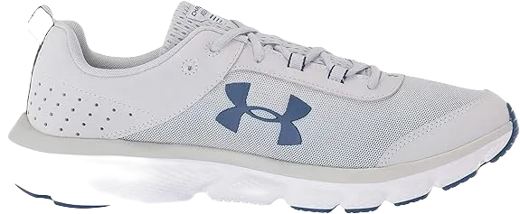
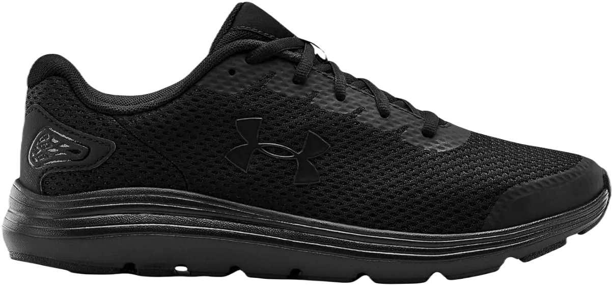

5 Best Under Armour Running Shoes
Shoes are among the best solutions for providing extra comfort and support. They offer not only a great wearing experience but also enhance security for your feet. Quality footwear is essential, as it ensures that various elements are kept at bay while delivering excellent features. With a wide variety of shoes available, it’s easy to find options that are lightweight and durable, ensuring you get the best experience.
For individuals with flat feet, finding the right shoes can significantly improve comfort and performance. These specially designed shoes offer the necessary support and cushioning, making them ideal for flat-footed runners. By providing extra care and softness, the right footwear helps alleviate discomfort and enhances your overall running experience. With the right shoes, you can enjoy a better level of comfort and stability, ensuring that you stay active and feel great.
-
#1
Under Armour Charged Assert 8
When it comes to footwear, quality is essential for ensuring comfort and support throughout your day. Well-designed shoes offer the extra care and lightweight characteristics that make them ideal for various activities.
Shoes come with a wide range of features that contribute to their effectiveness, ensuring you feel great while wearing them. They provide essential support and cushioning, making them highly valued in the market for their quality. Investing in good shoes means you’ll benefit from products designed with your comfort in mind.
In addition to being lightweight, many shoes are also designed to be waterproof, providing even more comfort and versatility. This feature allows you to run or walk without worrying about discomfort or injury, making these shoes a reliable choice for any activity. With the right pair, you can enjoy the freedom of movement without the concern of pain or discomfort. -
#2
Under Armour Charged Rogue
Shoes play a vital role in providing an extra layer of security, keeping harmful elements at bay. While there are many types of footwear available, some are specifically designed to offer exceptional comfort and advanced features.
The breathability and durability of these shoes make them ideal for everyday use. With their ability to shield your feet from external elements, you can enjoy a heightened level of comfort. For instance, Oxford shoes are designed with flexibility, allowing for greater ease of movement while running or walking.
Running shoes are particularly effective at protecting your feet, minimizing the risk of injuries during physical activity. They provide essential relief from pain and offer additional ankle support, ensuring that you can perform at your best without discomfort. With the right pair of shoes, you can focus on your activity while feeling secure and supported. -
#3
Under Armour Charged Impulse
Certain shoes are designed to provide exceptional care while effectively shielding your feet from external elements. Many people seek out these types of shoes for their ability to offer additional security and ensure positive results during wear. They are crafted to deliver both comfort and functionality, making them a valuable choice for anyone in need of reliable footwear.
These shoes excel in providing excellent security while effectively managing perspiration, keeping your feet dry and comfortable. They are designed not only for protection but also come in a variety of colors and styles, allowing you to choose a pair that meets your aesthetic preferences. With their emphasis on quality, these shoes make sure you feel good and look good at the same time.
Breathability and durability are key attributes that make these shoes ideal for various activities. Their competitive price range, coupled with warranties, adds extra value for the consumer, ensuring you receive both comfort and reliability. -
#4
Under Armour Surge 2
Shoes play a crucial role in providing security and keeping unwanted elements at bay. There is a wide variety of shoes designed to deliver excellent performance, ensuring you achieve positive results. The Step Aerobics shoes we’re discussing offer specific features that prioritize your comfort and care.
These shoes boast a lightweight design, making them an excellent choice for running without breaking the bank. They provide exceptional comfort and flexibility, which enhances the overall quality of your workout experience. With their thoughtfully crafted soles, these shoes support your movement, allowing for a smooth and responsive run.
In addition to their comfort, these shoes are designed to provide extra support and meet waterproof standards, ensuring they perform well in various conditions. With a range of impressive features, these shoes not only deliver on functionality but also offer rewarding opportunities for those seeking additional care and comfort during their activities. -
#5
Under Armour UA Charged Bandit 3
Shoes are essential for providing the care and comfort you need, ensuring you have enough space for a great fit. When discussing footwear, it’s important to consider options that are water-resistant and equipped with features designed to address your specific needs. The right shoes can help solve various issues, keeping your feet protected and comfortable throughout your day.
Among the many types of shoes available, those that are lightweight and incorporate leather components stand out for their flexibility and functionality. These shoes offer not only excellent support but also come with warranties, adding to their appeal.
The advanced features offered by these shoes contribute significantly to their overall effectiveness. Many people love wearing these shoes because of their impressive capabilities, which include excellent water resistance and moisture management. With the assurance of warranty coverage, you can enjoy the extra security and comfort they provide, ensuring your feet remain dry and comfortable regardless of the conditions.